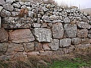
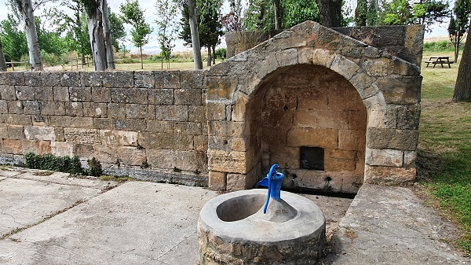

|
AUGUSTÓBRIGA
El actual municipio de Muro de
Ágreda se asienta sobre la antigua ciudad celtibérica, Obriga, que en
época romana, se llamó Augustóbriga.
Se pueden apreciar los cimientos y muros de un metro y medio
aproximadamente. Además de las murallas se han hallado monedas celtíberas.
La ciudad de Obriga fue tomada por el Cónsul Didio en el 96 a.e.c.
|
Augustóbriga,
inicialmente fue campamento augústeo situado en la
vía romana
correspondiente al número XXVII del Itinerario de Antonino, que unía Astúrica (Astorga) con Caesaraugusta (Zaragoza) por Numancia. Otra vía secundaria tenia su origen en esta localidad,
atravesando San Pedro Manrique y Tañine, donde aparece excavada
en roca, para llegar a Yanguas y a la Sierra Camerana. Agustóbriga era un importante
emplazamiento en el control de las
comunicaciones en la zona oriental de la provincia entre los
valles del Duero y el Ebro. Junto a la muralla por donde
discurre la calzada romana en el año 1895, se hallaron una
piedra miliaria
y una
lápida sepulcral.
Seis miliarios hacen mención de Augustóbriga. |
 |
Éstos son la de
Matalebreras, dos halladas en Pozalmuro, una en Aldealpozo, otra en
Calderuela y otra en Tardesillas. Todos ellos, excepto el de Tardesillas,
fueron realizados en tiempos del emperador Trajano.
Se han hallado numerosos vestigios de época romana, vasijas, sillares,
molduras, ladrillos gruesos, tejas de forma romana, ánforas, espuelas,
monedas, molinos de mano, y proyectiles de balista.
Entre el pueblo y la Venta se encontró una especie de campana, una
vasija con cenizas y una chapa metálica. En el paraje que da frente a
esta venta se ha descubierto un mosaico.
A un kilómetro del pueblo, situada en un paraje arbolado, se halla la
denominada fuente romana.

Por los restos
carbonizados se podría afirmar que Augustóbriga fue destruida por las
llamas en época visigoda.
SORIA ROMANA
|